Токио · острова Огасавара · природа
Титидзима и Огасавара: острова, которые никогда не касались материка
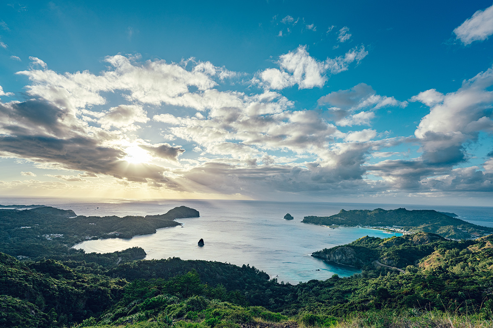
Острова Огасавара лежат в Тихом океане примерно в 1000 км к югу от Токио и при этом относятся к столичному округу. Они никогда не были частью материка, и всё живое приплыло, прилетело или прибыло сюда с ветром. За это архипелаг в 2011 году внесли в список природного наследия ЮНЕСКО.
Архипелаг
Острова разного возраста
Цепочка островов Огасавара тянется на 400 км в тысяче километров от основных островов Японии, и о том, что это всё ещё Токио, легко забыть. Архипелаг стоит там, где Тихоокеанская плита уходит под соседнюю, поэтому вулканы здесь активны до сих пор. Титидзима и Хахадзима родились из подводных вулканов больше 40 млн лет назад, южный остров Минами-Иото около 30 000 лет назад, а Нисиносима в 2021 году продолжала извергаться.
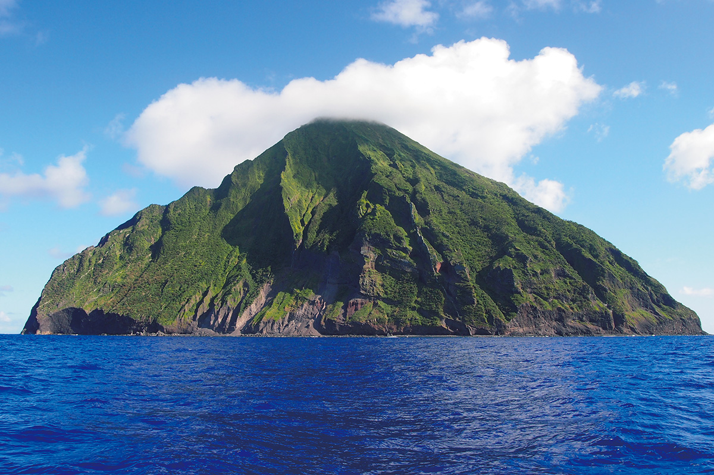
В список ЮНЕСКО острова попали, как и Амами с Окинавой, благодаря особой природе. Но устроена она совсем иначе. Острова юго-запада Японии когда-то откололись от Евразии. Это «материковые» острова: в ледниковые периоды, когда море опускалось, они снова соединялись с сушей. Огасавара же это «океанические» острова. Они поднялись со дна, где глубина достигает 2000–3000 м, и ни разу не были связаны с материком.
Об этом рассказывает орнитолог, который изучает в основном птиц Огасавары и в 2017 году участвовал в исследовании природы Минами-Иото. Для него самое интересное в океанических островах то, что каждое живое существо должно было пересечь море. На Окинаву млекопитающие пришли по суше, а на Огасавару, если не считать завезённых людьми, не попал ни один наземный зверь. Единственное местное млекопитающее здесь это летучая лисица, которая прилетела сама. Лягушек тоже нет.
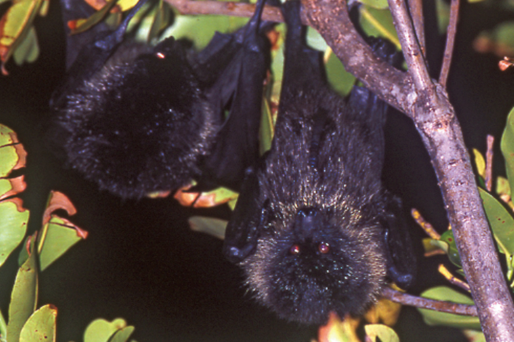
Эволюция
Крыло, волна и ветер
Как на одинокий остров посреди океана попадают те, у кого нет крыльев? Орнитолог объясняет это тремя силами. Первая это крыло: семена цепляются к перьям птиц или путешествуют в их помёте. В его исследованиях семена нашлись примерно на каждой десятой морской птице, а к перьям бывают прилеплены даже улитки. Вторая это волна: на плавнике приплывают рептилии и насекомые, живущие в древесине, а кокосовый орех и вовсе плывёт сам. Третья это ветер: он переносит семена с пушком, споры и крошечных насекомых. Микроскопические улитки, которые и взрослыми не больше миллиметра, путешествуют с тайфунами.
Первыми на голый молодой остров прилетают морские птицы. Еду им даёт океан, хищников на скалах нет, и можно спокойно растить птенцов. На извергающуюся Нисиносиму к 2021 году прилетели бурые олуши. Птицы приносят на остров органику, а вместе с ней и всё, что удачно пересекло море.
Даже у птиц на островах есть свои границы. Мэгуро, эндемичная птица Огасавары, водилась на Титидзиме и Хахадзиме, но не на молодых вулканических островах. Японская белоглазка, наоборот, осела на вулканических островах, а на Титидзиме и Хахадзиме появилась только с помощью людей. Орнитолог считает, что мэгуро пришла первой на острова с 40-миллионной историей, а опоздавшая белоглазка не смогла отвоевать там места. С хищниками то же самое: на Титидзиме и Хахадзиме живёт канюк, а на вулканических островах жил сапсан, позже там вымерший.
Летать птицам на самом деле не хочется: полёт требует огромной энергии, и если нет ни лис, ни куниц, а еды хватает на земле, лишний раз взлетать незачем. Окинавский пастушок на севере Окинавы так и разучился летать. Нелетающих птиц на Огасаваре не нашли, но здешние птицы стали домоседами. Предки мэгуро долетели сюда с далёких южных островов вроде Сайпана, а их потомки не перелетают даже на соседний остров. На Хахадзиме им уже тесно, но на Анэдзиму, до которой рукой подать, они не перебираются.
«Наверное, это барьер в голове. Знакомое место им милее незнакомого. Птицы на удивление консервативны»
орнитолог
Спасение
Самая редкая птица Японии
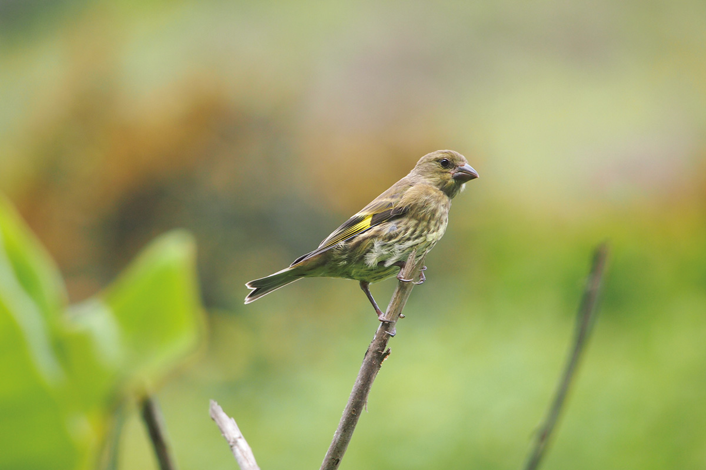
Огасаварская зеленушка когда-то жила по всему архипелагу. В 2021 году она гнездилась только на необитаемых островках у Хахадзимы и на Минами-Иото и считалась ближе всех птиц Японии к исчезновению. За сто лет её стало в сто раз меньше. На всех островах, откуда она пропала, живёт завезённая чёрная крыса, которая ловко лазает по деревьям и разоряет гнёзда. На островках у Хахадзимы чёрных крыс нет, но есть серые, и они тоже добираются до гнёзд, а на самой Хахадзиме птиц, прилетевших за кормом, ловят одичавшие кошки.
Поэтому сначала уничтожают крыс и решают вопрос с кошками на Хахадзиме, а дальше планируют разводить птиц в неволе и выпускать на волю. Одновременно у зеленушек изучают помёт и кровь и надевают им кольца, чтобы узнать, что они едят, какие у них гены и как далеко они летают. Этим вместе заняты жители, учёные, власти и природоохранные организации.
Титидзима
Ворота архипелага
Титидзима это главный остров и ворота Огасавары. Здесь субтропический морской климат и тепло круглый год. По преданию, острова открыл Садаёри Огасавара, но первыми здесь поселились европейцы, американцы и коренные жители Гавайских островов. Япония всерьёз взялась за освоение островов в 1876 году: первый глава местного отделения Министерства внутренних дел попросил подобрать культуры для тёплого климата, и вскоре на острове выращивали фрукты и овощи. Во время Тихоокеанской войны всех жителей вывезли на основные острова, и поля поглотил лес. В 1968 году США вернули острова Японии, и островитяне начали возрождать то, что когда-то здесь выращивали.
В центре острова, на плато Хигасидайра, устроен заповедник для акагасира-карасубато, местного голубя с красной головой. Лес здесь берегут для голубя, и в нём снова растут многие эндемичные растения. Территория входит в охраняемую лесную экосистему, и пройти туда можно только с гидом, у которого есть разрешение.
Заповедник Хигасидайра
- Адрес
- столичный округ Токио, деревня Огасавара, остров Титидзима, Хигасидайра
- Как добраться
- только с гидом, получившим разрешение на вход в лес
Минамидзима
Лагуна, которую не чинят
Минамидзима лежит у юго-западного берега Титидзимы. Весь остров охраняется государством как памятник природы, и высадиться на него можно только с токийским природным гидом. Туры от Титидзимы проводят несколько аккредитованных компаний. От порта Футами на маленькой лодке около 30 минут. Причала нет: лодки заходят в узкую бухту Самэикэ, названную так из-за акул, которые лежат на её дне, и при волнении высадка бывает невозможна.
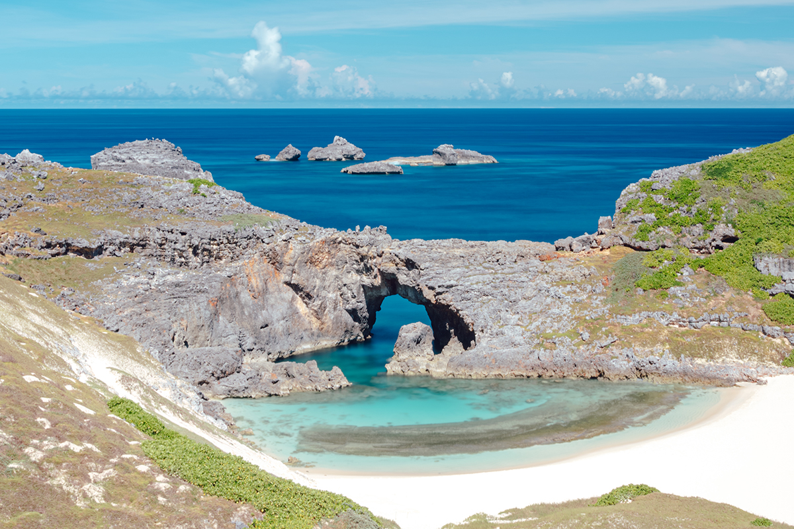
Минамидзима сложена известняком: дожди размыли его в карст, который потом опустился под воду, и остров покрыт острыми известняковыми столбиками. Гид ведёт на восточный гребень, откуда видна лагуна Огиикэ в центре острова. Это карстовая воронка, которая соединена с океаном естественным каменным мостом. Изумрудная вода прозрачна до самого дна и сливается с белым песком. На пляже лежат полуокаменевшие раковины улиток, вымерших 1000–2000 лет назад, а с мая по август на песке бывают следы морских черепах, которые выходят откладывать яйца.
Каменный мост уже треснул, но его не укрепляют. Если он обрушится, это тоже примут как красоту, созданную природой, объяснил гид. Эти слова запомнились фотографу Юити Ёкоте, который в 2023 году снимал Титидзиму и Хахадзиму.
«Здесь чувствуешь, что значит заповедник размером с целый остров. Огиикэ особенно интересна: природа в ней такая, как есть, и она слишком красива, слишком совершенна»
фотограф Юити Ёкота
Море
Дельфины в заливе
На Титидзиме популярны туры к дельфинам: можно смотреть на них с лодки или плавать рядом. Встретить их удаётся примерно в восьми случаях из десяти в любое время года, а с мая по ноябрь шансы ещё выше. В 2023 году на лодке, которая шла на Минамидзиму, были и участники такого тура, и на обратном пути дельфины появились прямо в заливе у порта Футами: пловцы прыгнули к ним, а остальные смотрели, как дельфины проносятся у самого борта.
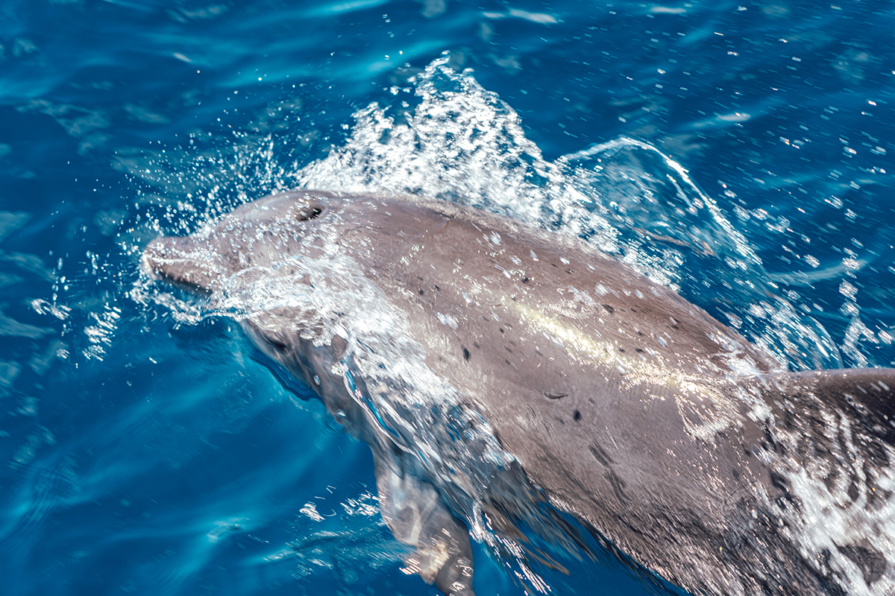
Есть на острове и ночные туры. В темноте можно увидеть летучую лисицу, у которой размах крыльев около 80 см, и светящийся зелёным гриб, который здесь называют «грин пепе».
Хахадзима
Тропа на Тибусаяму
Хахадзима лежит примерно в 50 км к югу от Титидзимы, на судне около двух часов. Остров покрыт субтропическим лесом, а в центре стоит Тибусаяма, высшая точка архипелага. Её высота всего 463 м, тропа хорошо оборудована, и подъём с возвращением занимает около шести часов, так что идти можно и без опыта. Гидов можно найти через сайт туристической ассоциации Хахадзимы.
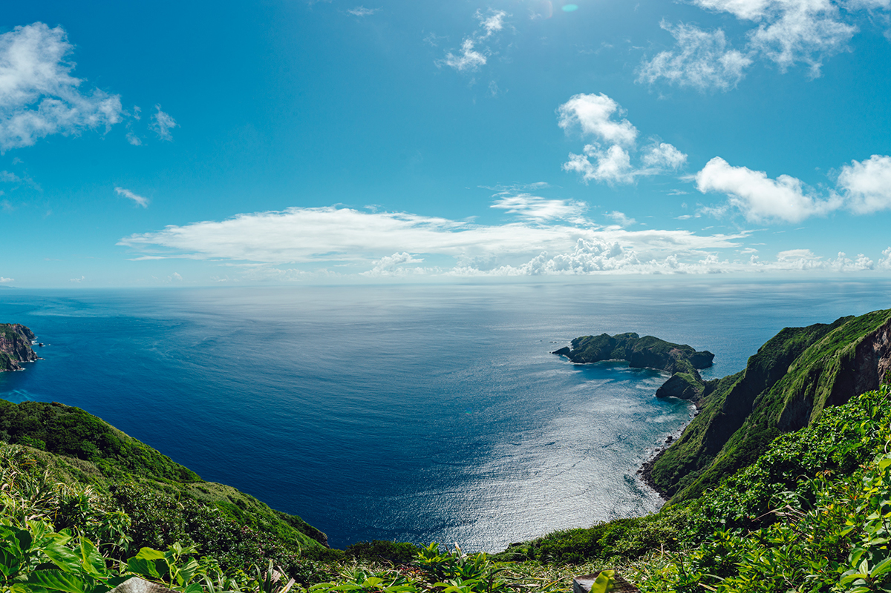
По дороге гид рассказывает о растениях, эндемиках и истории острова. Вдоль тропы растут огасаварская веерная пальма и местная меластома, а на ветках можно увидеть хахадзимскую мэгуро. Это птица с чёрными «очками» вокруг глаз, особо охраняемый памятник природы и вид под угрозой исчезновения. Отдельно стоит смотреть под ноги, на улиток: из примерно 100 местных видов больше 90% нигде, кроме Огасавары, не встречаются, и они продолжают эволюционировать. Это одна из главных причин, по которым острова внесли в список ЮНЕСКО.
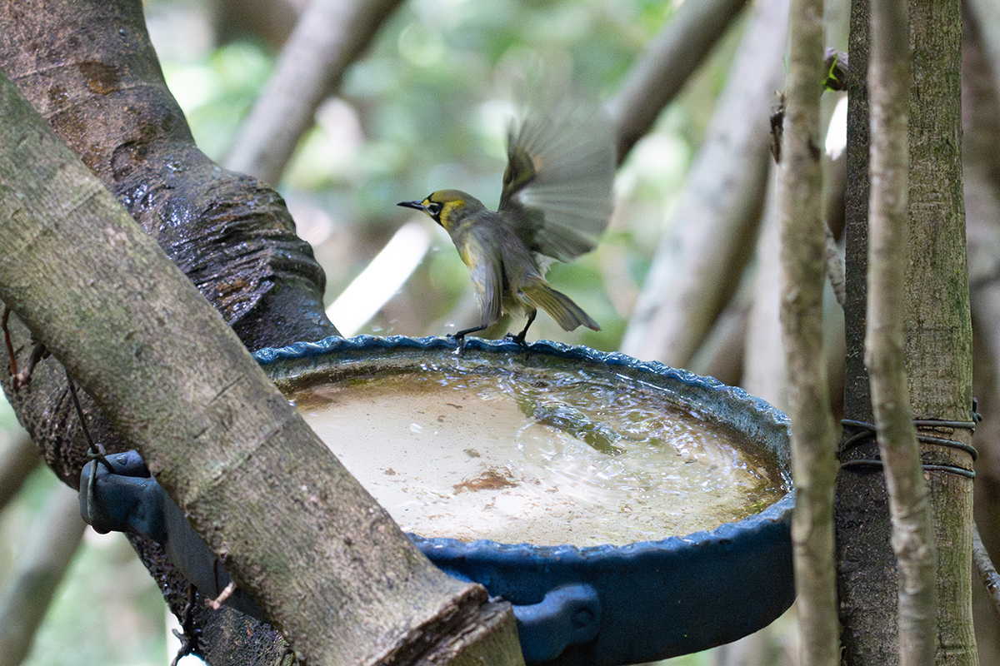
«Гора лёгкая. Гид показывает растения, которые есть только на Огасаваре, а по пути попадаются следы Тихоокеанской войны. От природы до истории, очень насыщенный маршрут»
фотограф Юити Ёкота
Вид с вершины, где густой зелёный лес встречается с синим морем, фотограф назвал «нереальными летними красками».
Для прогулки полегче есть Кофудзи на южной оконечности Хахадзимы, самый южный в Японии местный «маленький Фудзи». Тропа начинается в самой южной точке столичной дороги 241 и идёт через лес к берегу Минамисаки с яркими кораллами. От развилки почти ровная дорога (только перед вершиной крутой подъём) выводит на вершину высотой 86 м, туда и обратно около двух часов. С вершины видны только острова и синее море, которое здесь называют «бонинским синим».
У порта Оки, в парке Вакихама-нагиса, есть инкубатор морских черепах. В садке плавают зелёные черепахи, со второй половины апреля до начала августа можно увидеть кладку, а с середины июля до середины сентября вылупление черепашат.
Ночь
Млечный Путь над старой вертолётной площадкой
Звёзды фотограф снимал на старой вертолётной площадке, которую местные считают лучшим местом для наблюдения неба. В ясную ночь в новолуние над головой течёт Млечный Путь, видно низкое созвездие Скорпиона, которое в городе теряется в огнях, и звёзды шестой величины, на пределе человеческого зрения.
«Впервые в жизни я увидел Млечный Путь так подробно своими глазами и смог снять его на зеркалку»
фотограф Юити Ёкота
Вкус
Мёд, кофе и пандановые корзины
После возвращения островов Японии жители Титидзимы возродили кофе и пчеловодство, которыми здесь занимались до войны. Мёд пасеки «Сэбори ёхоэн» европейские пчёлы собирают с более чем 150 эндемичных растений, поэтому вкус меняется по сезонам. Пасеку не показывают и мёд напрямую не продают: его можно найти, например, в магазине сельхозкооператива на Титидзиме, если не раскупили.
Кофе на ферме Nose's FarmGarden ведёт свою родословную от арабики, которую на Титидзиме впервые попробовали выращивать в 1878 году. Его растят без пестицидов и сами обжаривают, вкус мягкий. Купить зёрна можно только участникам кофейного тура, не больше 100 г на человека (в 2022 году тур стоил 4500 иен с человека, зёрна 1080 иен за 50 г, всё по записи).
Ещё одно островное ремесло это плетение из листьев панданового дерева, которого на Огасаваре очень много. Коврики и корзины, которые плели первые поселенцы, со временем доработали, и они стали местным народным промыслом. Изделия делают и продают в мастерской «Асука кобо».
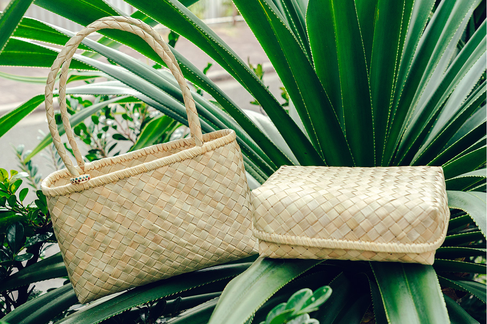
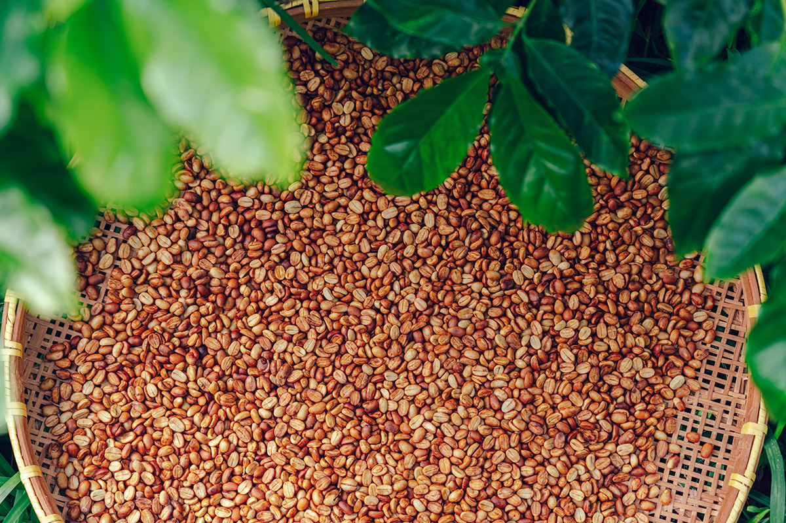
Nose's FarmGarden
- Адрес
- столичный округ Токио, деревня Огасавара, остров Титидзима, Нагатани
- Телефон
- +81 4998-2-3485
- Цены / Вход
- кофейный тур 4500 иен с человека, зёрна 1080 иен за 50 г (только участникам тура), по записи
- Сайт
- nosefarm.com
Мастерская плетения из пандана «Асука кобо»
- Адрес
- столичный округ Токио, деревня Огасавара, остров Титидзима, Миянохамамити
- Телефон
- +81 4998-2-2386
- Часы работы
- на следующий и через день после прихода «Огасавара-мару» 10:00–17:00, в день отхода судна 9:30–13:00, лучше уточнить заранее
- Выходные
- пока «Огасавара-мару» в пути, нерегулярно
Дорога
Сутки на корабле и проводы в море
На Титидзиму ходит регулярное судно «Огасавара-мару»: от причала Такэсиба в Токио до порта Футами в 2023 году путь занимал около 24 часов. На Хахадзиму пересаживаются в порту Футами на «Хахадзима-мару» и плывут ещё около двух часов до порта Оки.
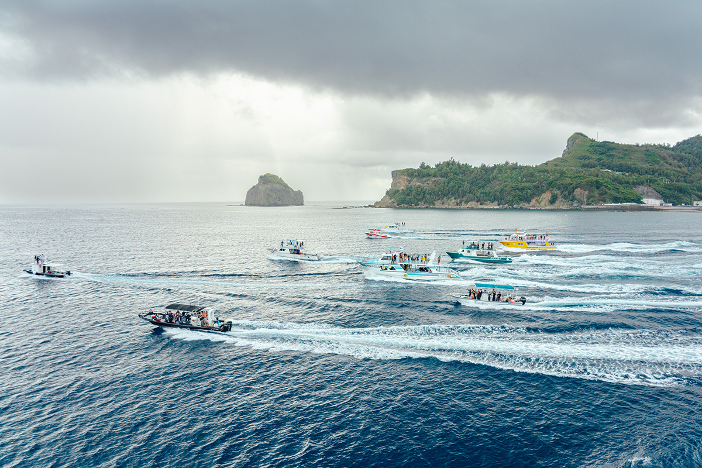
Проводы здесь это отдельное событие. Когда «Огасавара-мару» уходит в Токио, на причал приходят местные жители, а катера компаний, которые возят туристов, идут рядом с судном. Их команды машут вслед и устраивают для пассажиров целые представления.
Острова Титидзима и Хахадзима
- Как добраться
- от причала Такэсиба в Токио до порта Футами на Титидзиме судном «Огасавара-мару», около 24 часов; до Хахадзимы ещё около 2 часов на «Хахадзима-мару» от Титидзимы до порта Оки
- Телефон
- +81 4998-2-2587 (туристическая ассоциация деревни Огасавара), +81 4998-3-2300 (туристическая ассоциация Хахадзимы)
Фото: Юити Ёкота, Хироюки Кудо, Юри Ямасаки, Хироюки Ёда, туристическая ассоциация деревни Огасавара, Кадзуто Каваками.